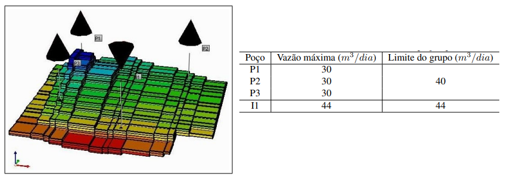

A obtenção de uma solução numérica para um problema físico através da aplicação de métodos numéricos nem sempre nos dá os resultados de acordo com o esperado.
Pessoas que trabalham no campos das Ciências (Engenharia, Química, Física, Biologia, Matemática etc.) manipulam números afim de alcançar objetivos com base em informações incertas. Ainda que a perfeição seja uma meta, ela raramente é atingida.
Erro em cálculo numérico é a diferença entre o valor obtido (aproximado) e o valor exato.
A resolução de um problema físico utilizando um método numérico produz, em geral, uma solução aproximada do problema.
Erros iniciais do problema (são exteriores ao processo de cálculo):
Erros associados ao uso de métodos numéricos (ocorrem no processo de cálculo):
Estudo de caso, como exemplo: Reservatório XYZ, possui três poços produtores que podem escoar no máximo 30 m3/dia de fluido, enquanto que o único poço injetor tem uma vazão máxima de 44 m3/dia. O sistema de produção limita a vazão do grupo de poços produtores em 40 m3/dia, enquanto que o injetor pode atuar com sua vazão máxima, já que essa também é o limite de injeção do sistema de produção.
